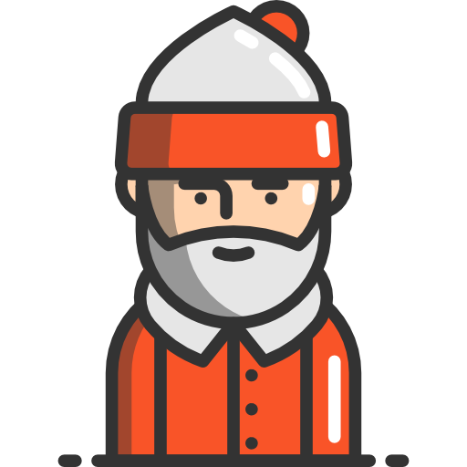

<main class="chore-user-main" ng-controller="ControllerChores">
  <section class="section-main">
    <!-- main avatar on page of user...will be enclosed in a status circle and positioned in center -->
    <div class="center-avatar">
      
    </div>
  </section><!-- end .section-main -->

  <!-- chore section of page...will include user name and chores unordered list -->
  <section class="section-chores">
    <h1 class="username">Username Chores</h1>
    <ul class="chore-list" ng-repeat="chore in totalChores">
      <li>
        
        <h2>{{chore.name}}</h2>
        <h2 class="chore-value">{{chore.value}}</h2>
        <h2>{{chore.description}}</h2>
        <span class="fa fa-check-circle-o" aria-hidden="true" ng-click="removeChore( chore )"></span>
      </li>
    </ul>
  </section><!-- end .section-chores -->
</main>
